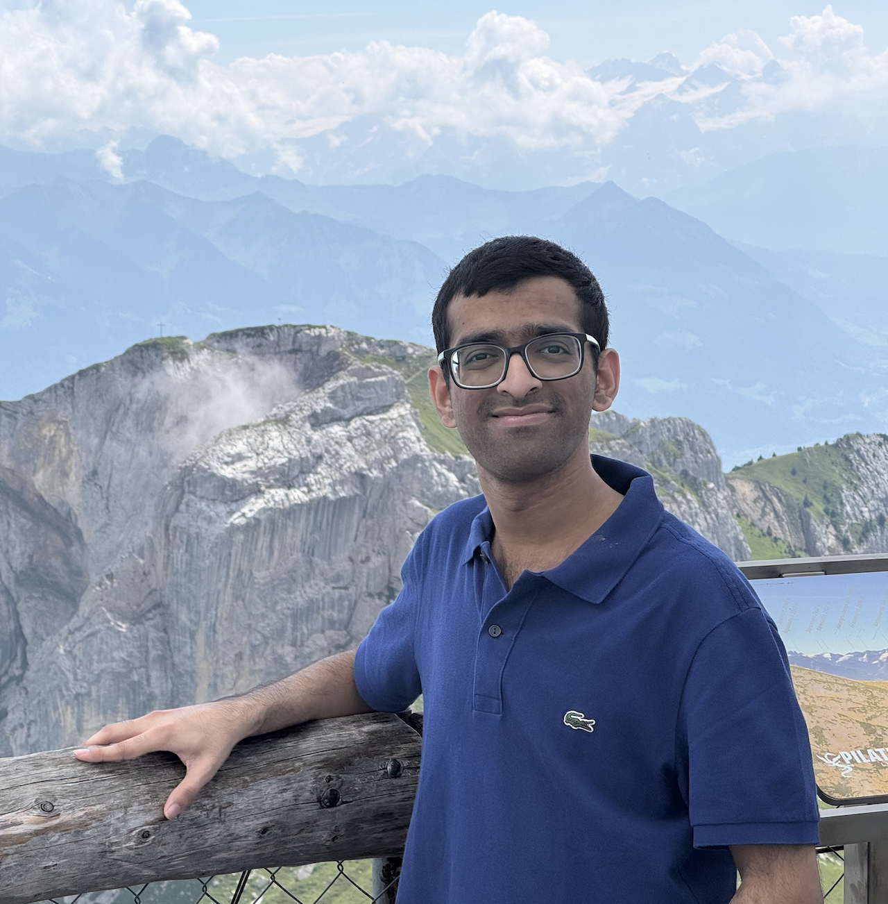

Harshvardhan Mestha
I am a final year undergraduate, at BITS Goa, majoring in Electronics and Instrumentation.
I work as a student researcher at APPCAIR, under the guidance of Prof. Ashwin Srinivasan, and Dr. Tanmay Verlekar, on explainable agentic protocols and AI for Healthcare, since 2023. I joined Dr. Anand Subramoney's group in 2024, on the topic of State Space Models for in-context learning. Recently, I spent an amazing summer in 2025 at TU Dresden in Germany, as a SSMP scholar, working on efficient State Space Model based LLMs for Neuromorphic hardware, under the guidance of Prof. David Kappel and Dr. Anand Subramoney, and I currently work on this. I am also the President of SAiDL, the AI club on campus.
I also love all things related to sci-fi, space, cars, and aviation. I also draw and you can find some of my art here.
I work as a student researcher at APPCAIR, under the guidance of Prof. Ashwin Srinivasan, and Dr. Tanmay Verlekar, on explainable agentic protocols and AI for Healthcare, since 2023. I joined Dr. Anand Subramoney's group in 2024, on the topic of State Space Models for in-context learning. Recently, I spent an amazing summer in 2025 at TU Dresden in Germany, as a SSMP scholar, working on efficient State Space Model based LLMs for Neuromorphic hardware, under the guidance of Prof. David Kappel and Dr. Anand Subramoney, and I currently work on this. I am also the President of SAiDL, the AI club on campus.
I also love all things related to sci-fi, space, cars, and aviation. I also draw and you can find some of my art here.
Publications
Multi-Turn Human-LLM Interaction Through the Lens of a Two-Way Intelligibility Protocol
Harshvardhan Mestha, Karan Bania, Shreyas V, Sidong Liu, Ashwin Srinivasan.
Accepted at Multi-turn Interactions in LLMs @ NeurIPS'25
State-space models can learn in-context by gradient descent
Neeraj Mohan Sushma, Yudou Tian, Harshvardhan Mestha, Nicolo Colombo, David Kappel, Anand Subramoney
Abstract Accepted at the 6th International Conference on the Mathematics of Neuroscience and AI
Exploring the Missing Medical Context in Generated Radiology Reports
Karan Bania*, Harshvardhan Mestha*, Tanmay Tulsidas Verlekar
Accepted at SLM4Health @ AIME’25
CountCLIP - [Re] Teaching CLIP to Count to Ten
Harshvardhan Mestha, Tejas Agrawal, Karan Bania, Yash Bhisikar